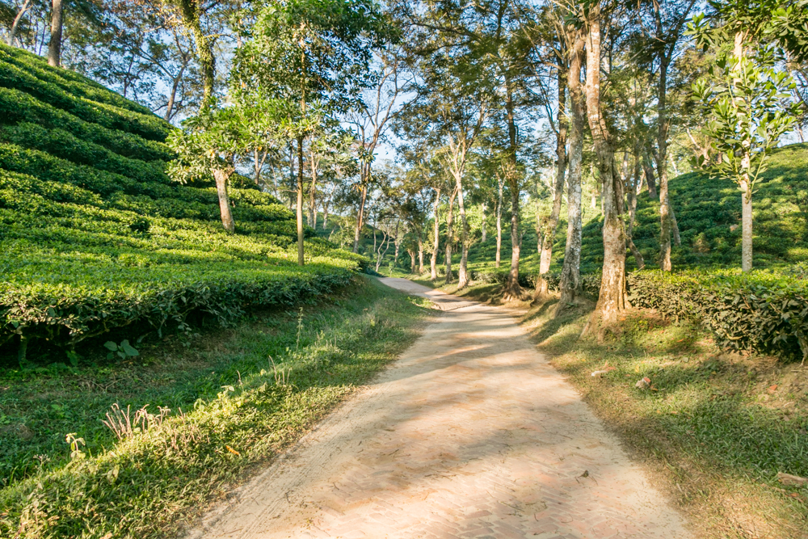

Sreemangal is situated in Moulvibazar district in sylhet division. Sreemangal is an Upazila. It is famous for tea garden. Rain all time occurs here. Nature has adorned sreemangal with green tress. Its natural scenery is very charming. It soothes one’s eyes. Birds are twittering always here. The first tea garden in Bangladesh which names “Malni chho ra tea garden” is here. Only one tea research institute in Bangladesh which name is BTRI (Bangladesh Tea Research Institute) is situated in Sreemangal. The terraced tea gardens, plantations and evergreen hills of sreemangal are wonderful treats for the tourists. On the way, of Sreemangal by bus you’ll see a statue “cha konna” which is stands for welcome you. But if you come in sreemangal by train you’ll miss this statue. When you’ll come near in the tea garden you find the smell of tea leaves. When you’ll reach sreemangal you get many sorts of hotels. Tea Resort & Rest House also available here. After taken rest you can visit tea gardens. After that you can go BTRI, there is Tea factory. You can go “Nilkantha” tea stall near BDR camp here you’ll get seven layers tea which is very uncommon tea in Bangladesh. Don’t forget to visit “Tea museum” in “British karighor” tea resort. Lawasara, Madhabpur Lake is nearest tourist spots near Sreemangal.Srimangal is connected to Bangladesh Railway System. Best way to get here is through rail station.
It is said the name Sreemangal (or Srimangal) is named after Sri Das and Mangal Das; two brothers who settled on the banks of the Hail Haor.[2] A copper plate of Raja Marundanath from the 11th century was found in Kalapur. During an excavation at Lamua, an ancient statue of Ananta Narayan was dug out. In 1454, the Nirmai Shiva Bari was built and still stands today. Srimangal thana was established in 1912. The central town later became a pourashava in 1935. In 1963, two peasants were killed by police officers which kicked off the Balishira peasant riots. During the Bangladesh Liberation War of 1971, the Pakistani army reached Srimangal on 30 April setting houses on fire and committing atrocities against women. The East Pakistan Rifles camp and Wapda office premises were among the two mass killing sites. Two mass graves remain in Bharaura with a memorial in North Bharaura.[1]
